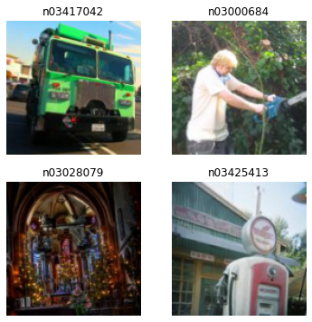

def avg_pool(x): return x.mean((2,3))1 Introduction
In this article we will build a ResNet type convolutional image networks from scratch using PyTorch. We will see why these type of networks are key to enabling the building much deeper networks that can be easily trained and perform well.
This article and it’s content is based on the fast ai deep learning course, chapter 14.
2 Improving Convolutional Networks - Average pooling
In an earlier article about convolutional networks in the models we used we ended up with a single vector of activations for each image by using enough stride-2 convolutions to down-sample each layer of activations so that we would end up with a grid size of 1.
If we tried this approach with other, bigger images we would face 2 issues:
- We would need many more layers
- The model would not be able to work on images of a different size to which it was trained on
By using this type of architecture, we are in essence hard coding the architecture and making it difficult to reuse. We could for example flatten the final layer regardless of the grid size it was beyond 1x1, which was indeed an earlier approach followed, but this would still not work on images of a different size, and takes a lot of memory.
The problem was better solved by using fully convolutional networks which take the average of activations accross a final grid e.g. over the x and y axis.
This will always convert a grid of activations into a single activation per image.
A full convolutional network then has a number of convolutional layers some of stride 2, at the end of which is an adaptive average pooling layer - to a layer to flatten and remove the unit axis, and a final linear layer.
We can define a fully convoltional network in the following way.
def block(ni, nf): return ConvLayer(ni, nf, stride=2)
def get_model():
return nn.Sequential(
block(3, 16),
block(16, 32),
block(32, 64),
block(64, 128),
block(128, 256),
nn.AdaptiveAvgPool2d(1),
Flatten(),
nn.Linear(256, dls.c))Because of the nature fo average pooling, this may not be suitable for some vision tasks, as you’re loosing certain types of information. For example if you were trying to recognise digits of 6 and 9, the orientation and relational aspect of groups of pixels matters - so fully convoltuonal may not be good here. However for other images like animals, the orientation does’nt really matter - a cat is a cat even if its upside down! So the fully convolutional networks which loose this relational information would be fine here.
When we come out of the convolutional layers, we have activations of dimensions bs x ch x h x w (batch size, a certain number of channels, height, and width). We want to end up with a tensor of bs x ch, so we can take the average over the last two dimensions and flatten the trailing 1×1 dimension like we did in our previous model.
There are other types of pooling we could use for example max pooling. For instance, max pooling layers of size 2, which were very popular in older CNNs, reduce the size of our image by half on each dimension by taking the maximum of each 2×2 window (with a stride of 2).
We are going to use a new dataset Imagenette which is a smaller version of the famous ImageNet dataset, this smaller one being with just 10 classes of image.
Lets get the data and train our new model.
def get_data(url, presize, resize):
path = untar_data(url)
return DataBlock(
blocks=(ImageBlock, CategoryBlock), get_items=get_image_files,
splitter=GrandparentSplitter(valid_name='val'),
get_y=parent_label, item_tfms=Resize(presize),
batch_tfms=[*aug_transforms(min_scale=0.5, size=resize),
Normalize.from_stats(*imagenet_stats)],
).dataloaders(path, bs=128)
dls = get_data(URLs.IMAGENETTE_160, 160, 128)
dls.show_batch(max_n=4)File downloaded is broken. Remove /root/.fastai/archive/imagenette2-160.tgz and try again.
def get_learner(m):
return Learner(dls, m, loss_func=nn.CrossEntropyLoss(), metrics=accuracy
).to_fp16()
learn = get_learner(get_model())
learn.lr_find()SuggestedLRs(lr_min=0.002290867641568184, lr_steep=0.007585775572806597)
# 3e-3 often a good learning rate for CNN's
learn.fit_one_cycle(5, 3e-3)| epoch | train_loss | valid_loss | accuracy | time |
|---|---|---|---|---|
| 0 | 1.882259 | 1.813273 | 0.404076 | 00:30 |
| 1 | 1.522370 | 1.521868 | 0.504459 | 00:30 |
| 2 | 1.276501 | 1.225626 | 0.606624 | 00:30 |
| 3 | 1.135786 | 1.183137 | 0.623185 | 00:30 |
| 4 | 1.042103 | 1.048710 | 0.665733 | 00:30 |
This is quite a good result, considering this is not a pre-trained model trying and to predict 10 image categories from scratch. But to improve this, we will need to do more than just add more layers.
3 Modern CNN’s - ResNet
3.1 Skip connections
The authors of the original ResNet paper noticed when training deeper models, even when using BatchNorm, that a network with more layers often did worse than a network with less layers.

It seems that a bigger network has a lot of trouble discovering the parameters of even the smaller better network when left by itself to just train this bigger network.
While this had been noticed before, what the authors of the paper did that was new was to realise it should be possible to create a deeper network that should do at least as well as a more shallow network, by essentially turning off the extra layers i.e. using an identity mapping.
An identity mapping is where you are passing through the signal from earlier layers directly, skipping over the current layer. Remember from Batch norm layers we have the transformative factors of gamma and beta - if we set gamma to zero for the extra layers - this would essentially turn off the actions of the extra layers - and allow the signal from the earlier layers to come through unaltered. This is called the skip connection.

This can allow the model to only change the later layers gradually. The original ResNet paper actually defined the skip connection as jumping over 2 layers, as seen in the diagram above.
Another way to think about ResNet’s and these skip connections is to consider the function here i.e.
Y = X + block(X)
So we are not asking this block layer to directly predict the output Y, we are asking the block to learn to predict the difference between X and Y to minimise the error i.e. block(X) wants to help X get closer to Y. So a ResNet is good at learning about slight differences between doing nothing and adding a little something to the previous signal to make it better. This is how ResNet’s got their name, as they are predicting ‘residuals’ i.e. a residual is the prediction - target.
Also what is key here is the idea of making learning more gradual and easier. Even though the Universal Approximation Theorem states that a sufficiently large network can learn any function, in practice there is a difference between how different architectures can make it easy and difficult to learn.
Let’s define a ResNet block with a skip connection, here norm_type=NormType.BatchZero causes fastai to init the gamma weights of the last batchnorm layer to zero).
class ResBlock(Module):
def __init__(self, ni, nf):
self.convs = nn.Sequential(
ConvLayer(ni,nf),
ConvLayer(nf,nf, norm_type=NormType.BatchZero))
def forward(self, x): return x + self.convs(x)There are 2 problems with this though, it can’t handle strides of more than 1, and it needs ni=nf. If we recall, convolutional operations change the dimensions of the output based on the output channels, as do strides of more than 1. This would prevent us from adding X to conv(X) as they would be of different dimensions.
To remedy this, we need a way to change the dimensions of x to match conv(x). So we can halve the grid size using and average pooling layer with stride 2, and we can change the number of channels using a convolution. We need to make the convolution as simple as possible, and that would be one with a kernal size of 1.
So we can now define a better ResBlock that uses these tricks to handle the changing shape of the skip connection.
def _conv_block(ni,nf,stride):
return nn.Sequential(
ConvLayer(ni, nf, stride=stride),
ConvLayer(nf, nf, act_cls=None, norm_type=NormType.BatchZero))class ResBlock(Module):
def __init__(self, ni, nf, stride=1):
self.convs = _conv_block(ni,nf,stride)
self.idconv = noop if ni==nf else ConvLayer(ni, nf, 1, act_cls=None)
self.pool = noop if stride==1 else nn.AvgPool2d(2, ceil_mode=True)
def forward(self, x):
return F.relu(self.convs(x) + self.idconv(self.pool(x)))We are using the noop function here which just returns the input unchanged, so idconv does nothing if ni==nf, and pool does nothing if stride=1 - which is what we want in our skip connection.
Also we moved the Relu after both layers, treating as the whole ResNet block like one layer.
Lets try this model.
def block(ni,nf): return ResBlock(ni, nf, stride=2)
learn = get_learner(get_model())
learn.fit_one_cycle(5, 3e-3)| epoch | train_loss | valid_loss | accuracy | time |
|---|---|---|---|---|
| 0 | 1.947870 | 1.877467 | 0.335796 | 00:32 |
| 1 | 1.671832 | 1.602260 | 0.456561 | 00:32 |
| 2 | 1.379121 | 1.492799 | 0.533503 | 00:32 |
| 3 | 1.170203 | 1.069924 | 0.662166 | 00:33 |
| 4 | 1.032529 | 1.050656 | 0.672357 | 00:33 |
While this is not spectacularly better, the point is this allows us to now train deeper models more easily. For example we can make a model with twice as many layers in the following way.
def block(ni, nf):
return nn.Sequential(ResBlock(ni, nf, stride=2), ResBlock(nf, nf))
learn = get_learner(get_model())
learn.fit_one_cycle(5, 3e-3)| epoch | train_loss | valid_loss | accuracy | time |
|---|---|---|---|---|
| 0 | 1.945738 | 1.871942 | 0.353631 | 00:36 |
| 1 | 1.632775 | 1.519365 | 0.492484 | 00:36 |
| 2 | 1.331637 | 1.168114 | 0.622930 | 00:36 |
| 3 | 1.081849 | 1.036962 | 0.665733 | 00:35 |
| 4 | 0.944774 | 0.946332 | 0.695287 | 00:36 |
This deeper model is now doing better with the same number of epochs.
For the ResNet breakthrough and many others a key note might be that many of these breakthroughs have come through experimental observations of odd things, and then trying to figure out why these occour. So deep learning is a very experimental field where many breakthroughs come through experiments.
Further work exploring ResNet’s showed how the skip connections actually helped smooth the loss landscape making training easier, more gradual, and easier to avoid getting stuck in a local minima.

3.2 State of the art ResNet’s
Current ResNet’s used have a few further tweaks that improve their performance. This include the earlier layers being just convolutional layers followed by a max pooling layer, without a full ResNet block and skip connections. These earlier layers are called the stem of the network.
def _resnet_stem(*sizes):
return [
ConvLayer(sizes[i], sizes[i+1], 3, stride = 2 if i==0 else 1)
for i in range(len(sizes)-1)
] + [nn.MaxPool2d(kernel_size=3, stride=2, padding=1)]_resnet_stem(3,32,32,64)Why this approach? with deep convolutional networks, most of the computation occours in the earlier layers of the network. Therefore it helps to keep the earlier layers as simple as possible.. ResNet blocks take far more computation than a plain convolutional block.
Lets now try this approach with improving out ResNet architecture with these improvements in mind.
class ResNet(nn.Sequential):
def __init__(self, n_out, layers, expansion=1):
stem = _resnet_stem(3,32,32,64)
self.block_szs = [64, 64, 128, 256, 512]
for i in range(1,5): self.block_szs[i] *= expansion
blocks = [self._make_layer(*o) for o in enumerate(layers)]
super().__init__(*stem, *blocks,
nn.AdaptiveAvgPool2d(1), Flatten(),
nn.Linear(self.block_szs[-1], n_out))
def _make_layer(self, idx, n_layers):
stride = 1 if idx==0 else 2
ch_in,ch_out = self.block_szs[idx:idx+2]
return nn.Sequential(*[
ResBlock(ch_in if i==0 else ch_out, ch_out, stride if i==0 else 1)
for i in range(n_layers)
])The various versions of the models (ResNet-18, -34, -50, etc.) just change the number of blocks in each of those groups. This is the definition of a ResNet-18:
rn = ResNet(dls.c, [2,2,2,2])Let’s try training this new Resnet-18 architecture.
learn = get_learner(rn)
learn.fit_one_cycle(5, 3e-3)| epoch | train_loss | valid_loss | accuracy | time |
|---|---|---|---|---|
| 0 | 1.625527 | 2.041075 | 0.396688 | 00:55 |
| 1 | 1.329917 | 1.507927 | 0.541147 | 00:54 |
| 2 | 1.065707 | 1.900392 | 0.499618 | 00:54 |
| 3 | 0.870085 | 0.987169 | 0.682293 | 00:54 |
| 4 | 0.765841 | 0.779386 | 0.753631 | 00:54 |
3.3 Bottleneck Layers
We can use another method when making even deeper models to try and reduce the amount of memory used to make it faster, this might be fore ResNet’s of depth 50 or more.
Rather than stacking 2 convolutions with a kernal size of 3, we can use 3 different convolutions two 1x1 at the start and end, and one 3x3. This is called a bottleneck layer.

How does this help? 1x1 convolutions are much faster, so this type of block runs much faster than the ones with only 3x3 kernals. This then allows us to use more channels, 4 times more in fact (we end up with 256 channels out instead of just 64) which reduce then restore the number of channels (ie the name bottleneck).
So we end up using more channels in the same amout of time with this type of block architecture. Lets try improving our model with a bottleneck block and use it to build a bigger model ResNet-50.
def _conv_block(ni,nf,stride):
return nn.Sequential(
ConvLayer(ni, nf//4, 1),
ConvLayer(nf//4, nf//4, stride=stride),
ConvLayer(nf//4, nf, 1, act_cls=None, norm_type=NormType.BatchZero))To get better results from this bigger model we will need to train it longer and we can use bigger images as well.
dls = get_data(URLs.IMAGENETTE_320, presize=320, resize=224)
rn = ResNet(dls.c, [3,4,6,3], 4)File downloaded is broken. Remove /root/.fastai/archive/imagenette2-320.tgz and try again.Bear in mind even though we are using bigger images, we don’t need to really change our network due to this because its fully convolutional it works just fine (remember the use of pooling layers). This also allows us to use the fastai technique of progressive resizing.
4 Conclusion
In this article we have built a ResNet convolutional deep learning image model from scratch, using many iterations and variations - including some of the most recent state of the art techniques.